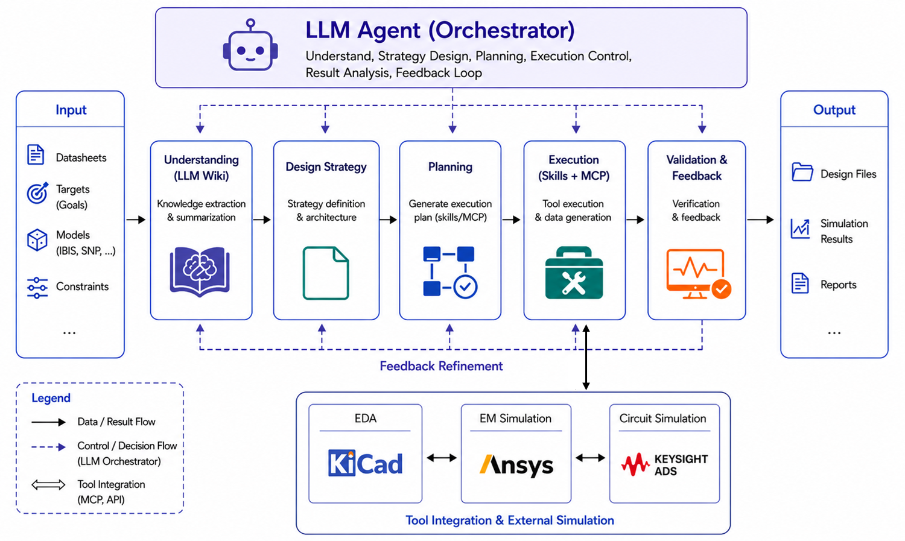

1. Overall Harness Flow

A file-based SI/PI engineering harness for converting specifications into strategy, PCB/package layout, HFSS 3D Layout extraction, ADS bench verification, and evidence-linked reports.
Enable GitHub Pages for the repository and select the /docs
folder as the publishing source to view this interactive carousel online.